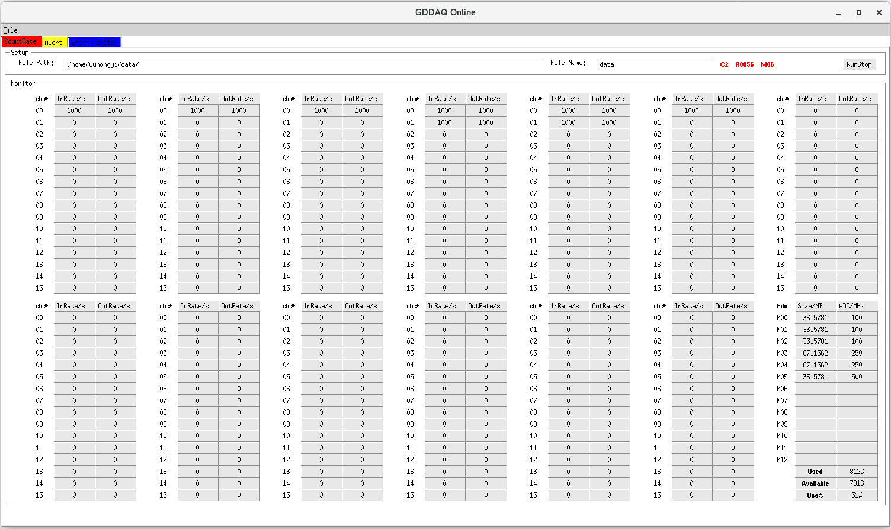
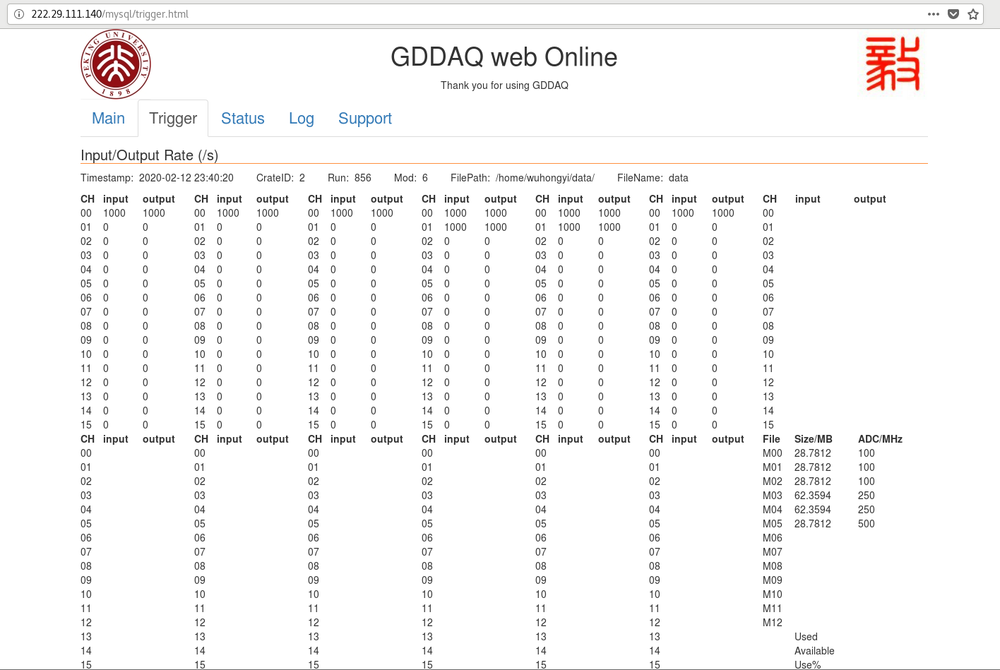

Online Stattics¶
ROOT-based graphical interface¶
Open the online monitoring main interface by executing the following command:
./online
click RunStart to enable online monitoring, and online monitoring will be refreshed every 3 seconds. The trigger rate of each channel and the actual event output rate of each channel can be monitored in real time.
The monitoring interface is as follows:
In the “Alert” interface, users can set the upper limit and lower limit of the trigger rate of each channel. When the trigger rate is lower than the set lower limit or higher than the set upper limit, the value of the channel will turn blue and red.
In the “EnergyMonitor” interface, users can browse the energy spectrum of each channel.
Web-based graphical interface¶
The premise of using this web program is to install the MYSQL database. For how to install and set up the database, please check the corresponding chapter.
There are two subdirectories under the mysql directory, respectively createdb and online.
createdb
Modify the database parameters in the mysql/createdb/UserDefine.hh file. The information includes the IP of the database, and the user name and password for creating the database.
#define HOST_NAME "222.29.111.140"
#define USER_NAME "admin"
#define USER_PASSWD "xia17pxn"
Then run the following command to compile the program:
cd mysql/createdb
make clean
make
Compilation will generate the executable file createdb. Executing the program will create the database and the corresponding tables. It should be noted that each time the program is executed, the original database will be deleted and then re-created.
online
Modify the database parameters in the mysql/online/UserDefine.hh file. The information includes the IP of the database, and a user name and password that has permissions to write and update the database.
#define HOST_NAME "222.29.111.140"
#define USER_NAME "data"
#define USER_PASSWD "xia17pxn"
Then run the following command to compile the program:
cd mysql/online
make clean
make
Compilation will generate an executable file onlinedb, execute the program, and periodically read the data in shared memory and write it to the database. This program needs to run at all times.